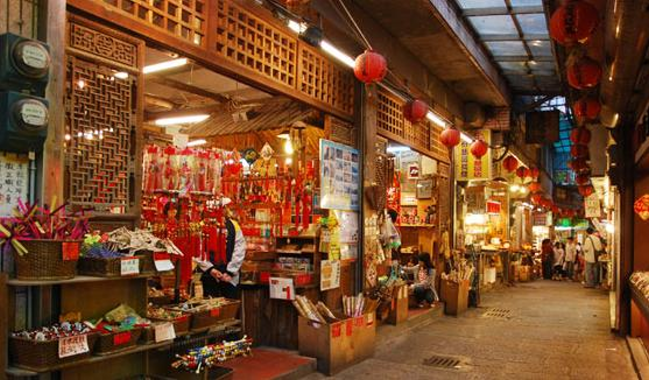

除了豎崎路之外，基山街也是九份非常繁華熱鬧的商業街，
昔日由於採礦、掏金全日無休，礦工跟掏金客是輪班制，因此基山街上徹夜燈火通明。
當時，是全台消費能力最繁榮的商業區，至今，基山街仍沒有太大的改變。
基山街除了是九份老街最主要的商店街、最熱鬧的街道以外，也是聚集最多九份當地美食的地方。
街道兩旁包括來九份必嚐的九份芋圓、草仔粿、芋粿巧、魚丸、魚羹、雞捲……等各種數不完的美食。
狹小的小巷，向上看屋簷緊密相連，擁擠的觀光人潮、紅色的燈光，充滿著熱鬧的氣氛。
九份雖然經常下雨，但在街道上撐著傘，沿路感受這復古的氛圍，還真是別有一番風味呢！